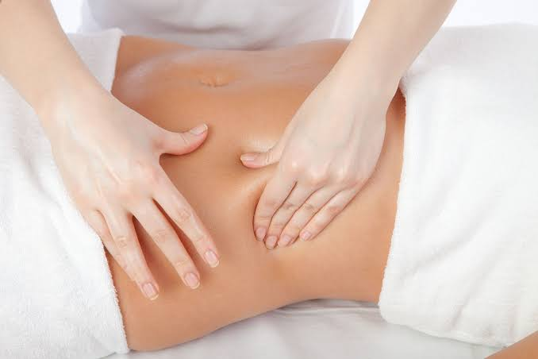
Massagem Modeladora
A massagem modeladora utiliza manobras rápidas e intensas sobre a pele, utilizando pressões que buscam atingir as camadas de gordura profunda.
Benefícios: Auxilia na redução de medidas, melhora a circulação sanguínea, ajuda na modelagem do contorno corporal e atua diretamente na diminuição da retenção de líquidos.
Agendar Esse Tratamento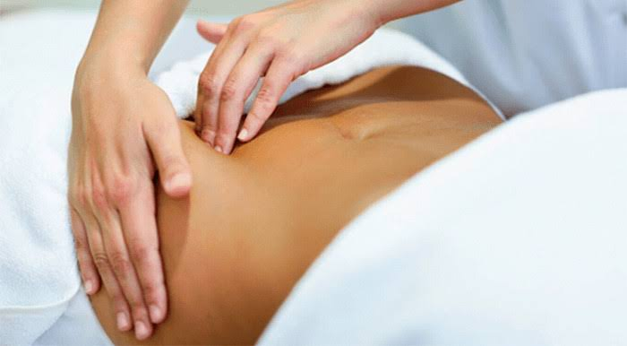
Drenagem pós-operatório
Tratamento indispensável conduzido de forma extremamente suave e técnica para reabilitar tecidos traumatizados por cirurgias plásticas ou intervenções médicas.
Benefícios: Previne a formação de fibroses e aderências, diminui consideravelmente os edemas (inchaços), alivia dores pós-cirúrgicas e acelera o processo natural de cicatrização da pele.
Agendar Esse Tratamento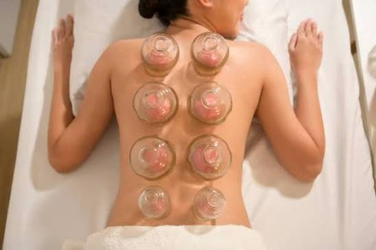
Liberação Miofascial
Técnica manual que aplica pressão em pontos específicos do corpo para relaxar e desatar os nós da fáscia muscular (tecido que envolve nossos músculos).
Benefícios: Alívio imediato de dores musculares crônicas, redução de tensões acumuladas pelo estresse, aumento visível da flexibilidade e melhora no rendimento físico.
Agendar Esse Tratamento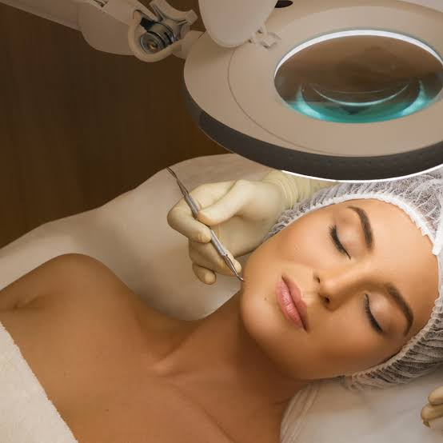
Limpeza de Pele
Procedimento facial profundo focado em restabelecer o equilíbrio e a pureza natural da pele do rosto através de etapas rigorosas de assepsia e hidratação.
Benefícios: Remoção completa de impurezas, cravos (comedões) e miliums, eliminação de células mortas, desobstrução dos poros e renovação total do viço cutâneo.
Agendar Esse Tratamento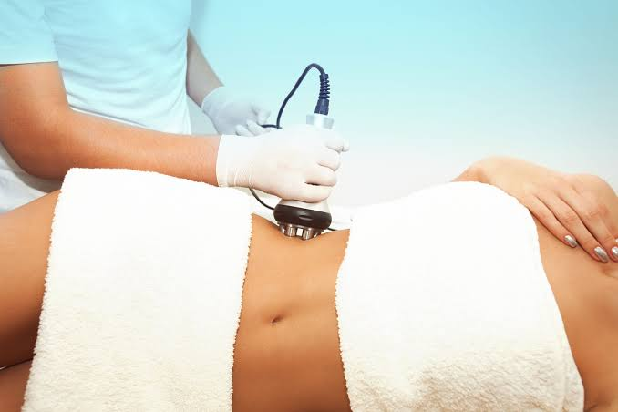
Radiofrequência
Tecnologia avançada não invasiva que eleva a temperatura controlada do tecido subcutâneo para estimular as fibras de sustentação da pele.
Benefícios: Estimula de forma massiva a produção de colágeno e elastina, combate a flacidez facial e corporal de maneira eficiente e suaviza rugas e linhas finas.
Agendar Esse Tratamento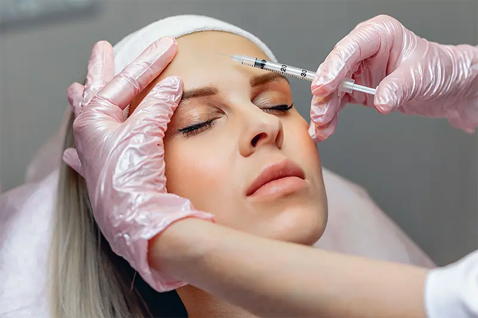
Botox
Aplicação estratégica voltada ao relaxamento temporário dos músculos faciais responsáveis pelas marcas mecânicas do tempo.
Benefícios: Suavização drástica de linhas de expressão na testa, pés de galinha e glabela, proporcionando um aspecto muito mais descansado, leve e completamente natural.
Agendar Esse Tratamento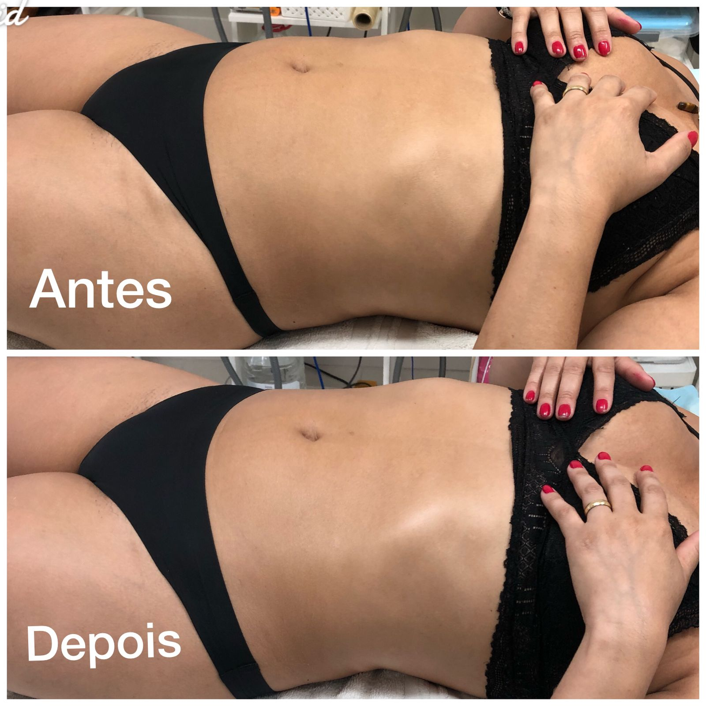
Detox Corporal
Massagem com movimentos altamente precisos, lentos e suaves direcionados aos gânglios linfáticos para drenar fluidos em excesso.
Benefícios: Reduz imediatamente a retenção hídrica (inchaço), auxilia na eliminação natural de toxinas do organismo e melhora o sistema imunitário e circulatório.
Agendar Esse Tratamento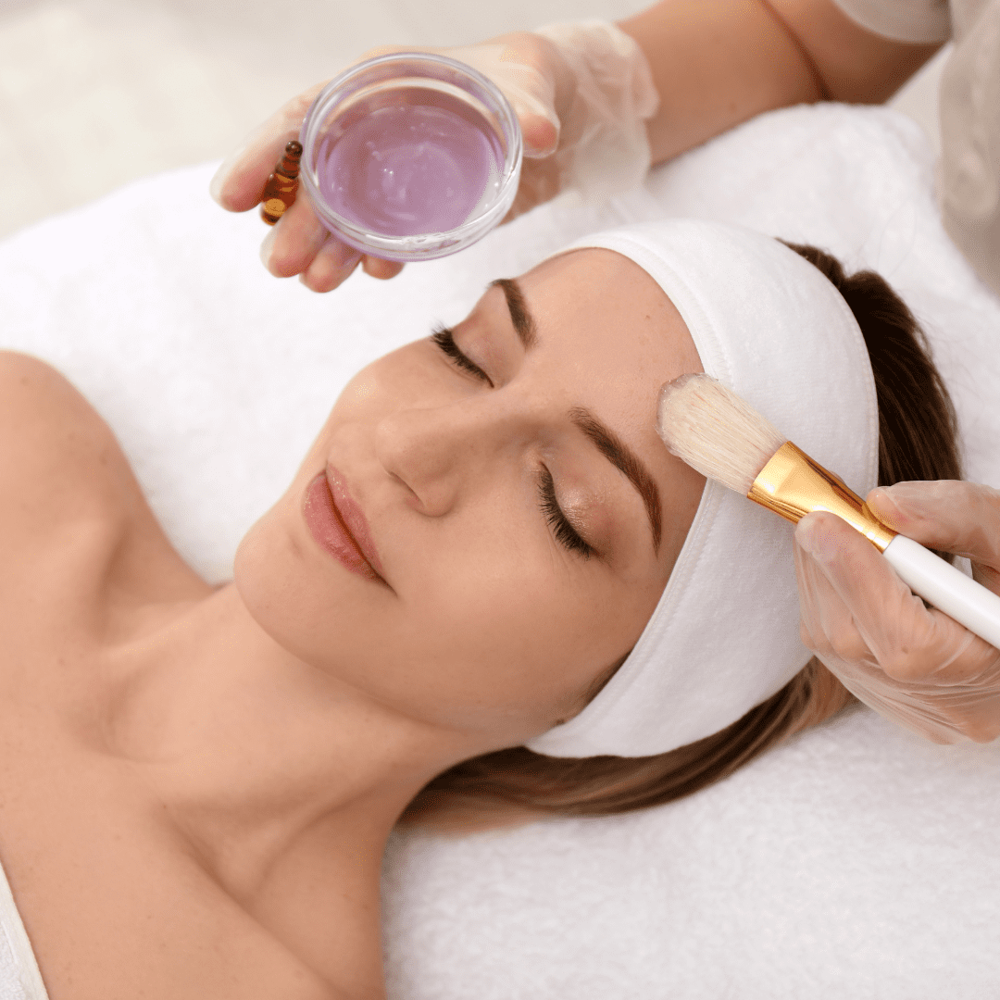
Peeling Descamativo
Tratamento baseado na descamação controlada da pele para induzir o corpo a construir uma nova camada dérmica totalmente saudável.
Benefícios: Altamente focado na renovação celular, clareamento gradual de manchas (como melasmas e marcas de acne) e uniformização da textura da pele.
Agendar Esse Tratamento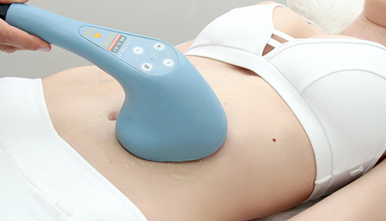
Tratamento de Gordura localizada
Procedimento de alta tecnologia focado na destruição das células adiposas em áreas difíceis, como abdômen, flancos e culotes.
Benefícios: Reduz drasticamente as medidas corporais, elimina o acúmulo de gordura resistente a dietas, melhora o contorno da silhueta e promove uma autoestima renovada.
Agendar Esse Tratamento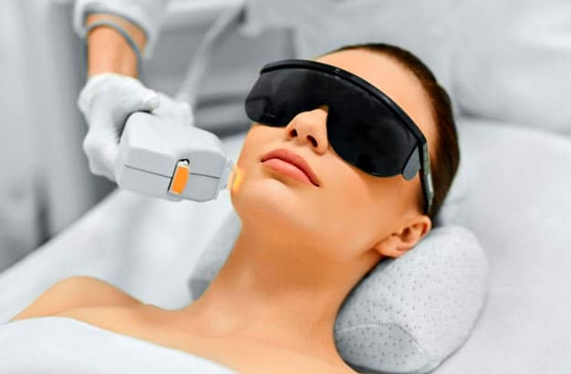
Luz Pulsada
Tratamento estético versátil que utiliza feixes de luz para atingir diferentes camadas da pele, ideal para suavizar manchas, sardas, vasinhos faciais e estimular o colágeno.
Benefícios:Clareia manchas de forma rápida, uniformiza o tom da pele, reduz linhas finas e estimula a firmeza com recuperação imediata.
Agendar Esse Tratamento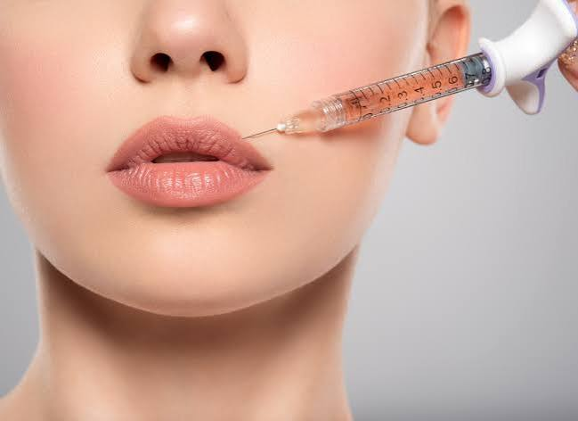
Preenchimento labial
O preenchimento labial é um procedimento realizado com ácido hialurônico para aumentar o volume, definir o contorno, corrigir assimetrias e promover hidratação. O tratamento é personalizado para valorizar a beleza natural dos lábios com resultados harmoniosos.
Benefícios: Aumenta o volume dos lábios de forma equilibrada, define o contorno, melhora a simetria, suaviza linhas ao redor da boca, proporciona hidratação intensa e devolve firmeza, resultando em lábios mais bonitos, saudáveis e com aparência natural.
Agendar Esse Tratamento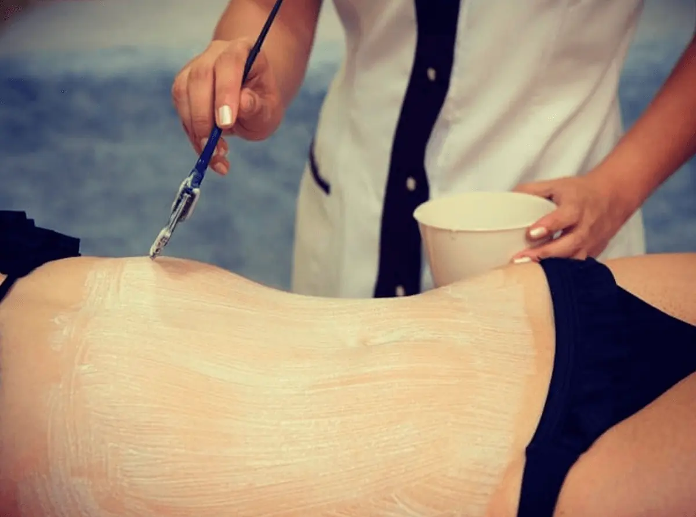
Banho de Lua
Ritual estético focado na descoloração segura dos pelos corporais, associado a técnicas de proteção da pele, esfoliação e nutrição.
Benefícios: Garante pelos dourados, camuflados e uniformes sem desconforto, remove células mortas e promove uma pele profundamente macia, iluminada e acetinada.
Agendar Esse Tratamento